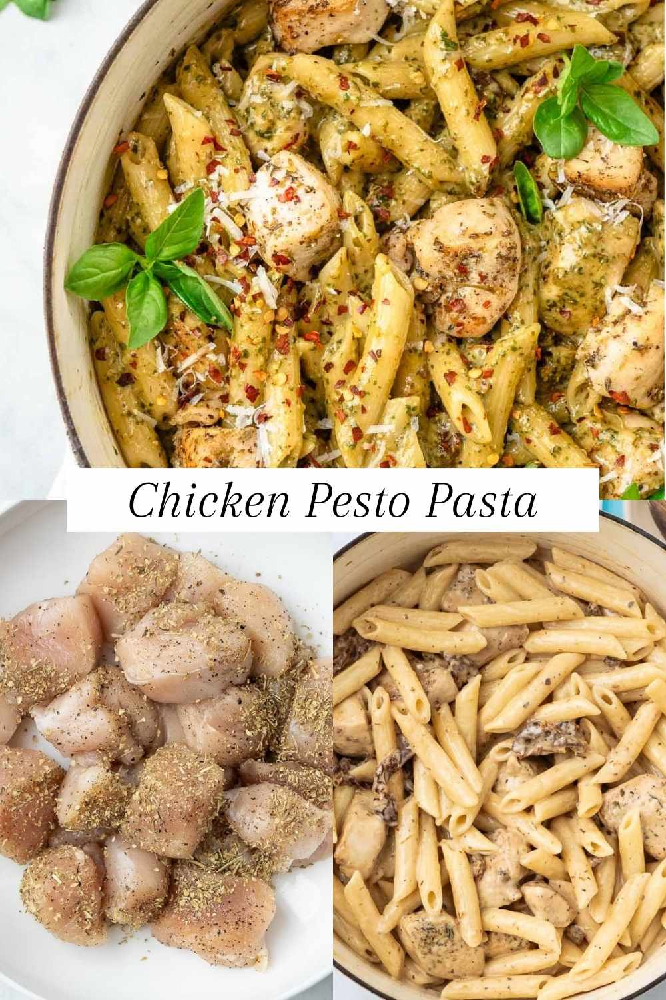

Description
A quick and flavorful pasta dish made with juicy grilled chicken, fresh pesto, cherry tomatoes, green beans, and creamy crème fraîche. Perfect for a delicious family dinner!

Ingredients
- 400 g boneless, skinless chicken breasts
- 145 g fresh pesto
- 350 g dried pasta
- 200 g green beans
- 200 g cherry tomatoes, halved
- 2 tablespoons crème fraîche
- Salt and pepper to taste
- Pine nuts (optional, for garnish)
Steps
- Preheat the grill to high heat.
- Flatten the chicken breasts and grill for 5 minutes on one side.
- Flip the chicken, spread a teaspoon of pesto on each breast, and grill for another 5 minutes or until fully cooked.
- Cook the pasta in boiling salted water for about 10 minutes, following the package instructions.
- Halve the cherry tomatoes and trim the green beans.
- Add the green beans to the pasta water during the last 4 minutes of cooking.
- Slice the cooked chicken into thin strips.
- Drain the pasta and green beans. Mix with the remaining pesto, cherry tomatoes, crème fraîche, and chicken.
- Season with salt and pepper. Sprinkle with pine nuts if desired.
- Serve hot and enjoy!